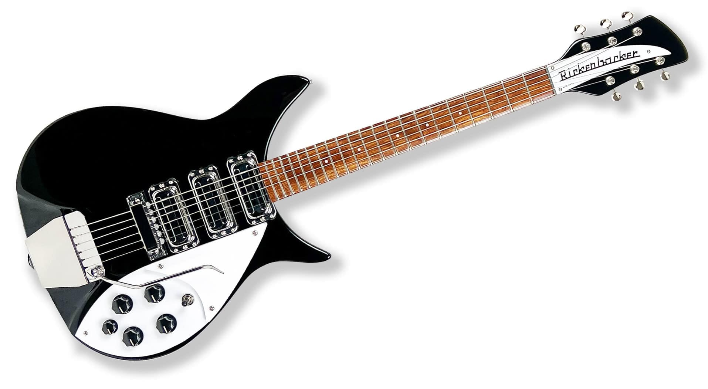

1964 Rickenbacker 325
Originally designed by German guitar craftsman Roger Rossmeisl, the 325 is most well known for being John Lennon's primary guitar during the early career of the Beatles.

1965 Epiphone Casino
Hollow bodied eclectic guitars that were made by epiphone the sister brand of gibson. Debuted in 1961 and have been used by artists like The Beatles, Edge, and Paul Weller.